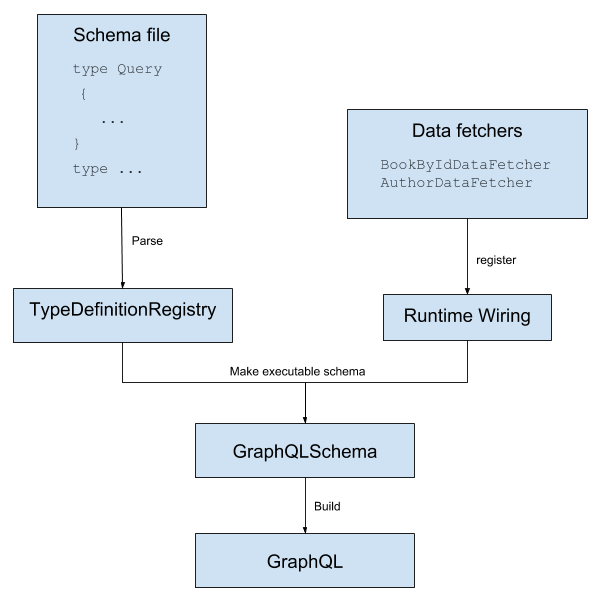
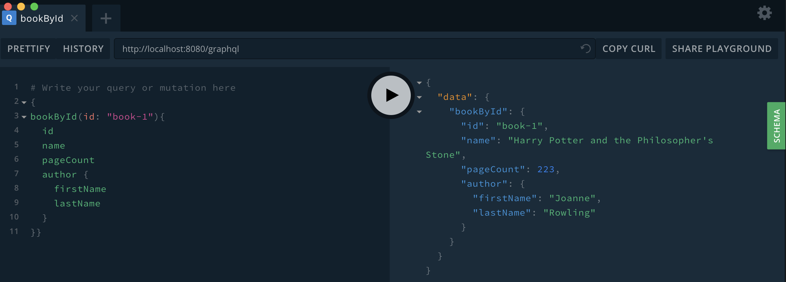

GraphQL Java 是使用Java server对GraphQL的实现。在GraphQL Java的Github账户中，有几个仓库，其中最重要的一个就是GraphQL Java Engine，这是所有其他功能的基础。
GraphQL Java Engine 本身仅关注查询条件的执行，不会处理和HTTP或者JSON相关的问题。因此，可以采用GraphQL Java Spring Boot项目，通过Spring Boot把API暴露到HTTP层面。
创建一个GraphQL Java server的主要步骤：
- 定义一个GraphQL Schema
- 定义查询返回的具体的数据
示例API：获取一本书的详情
这里的示例API就是一个简单的获取一本书的详细信息。这不算是一个全面的API，但对于这篇示例文章来说够用了。
创建一个Spring Boot应用
最简单的创建一个Spring Boot app的工具就是使用“Spring Initializr”网站的工具，在线生成： https://start.spring.io/。
选择以下选项：
- Gradle Project
- Java
- Spring Boot 2.1.x
使用以下项目元信息：
- Group: com.graphql-java.tutorial
- Artifact: book-details
项目的依赖，选择Web。
然后点击 Generate Project就会下载一个可以启动的Spring Boot app了。接下来提到的文件和路径，都会和这个项目相关联。
我们需要添加三个新的依赖到我们项目的buidl.gradle:
第一个是GraphQL Java，第二个是GraphQL Java Spring，第三个是Google Guava。Guava 不是必须的，但是可以使我们的开发简单点。
添加后，项目依赖变成下面的样子：
1 | dependencies { |
Schema
在src/main/resources文件夹下添加一个文件schema.graphql，复制以下内容到文件中：
1 | type Query { |
这个schema定义了一个顶级值域（在type Query中）：bookById会返回一本书的详情。
同时，其中也定义了 type Book 有下列值域：id、name、pageCount和anthor。author也是一个 type Author，定义在Book后面。
上面用于描述schema的语言称为 Schema Definition Language 或者 SDL。更多文档查看这里。
现在有了这个文件，就需要通过读取这个文件来实现他，解析他，通过添加代码来加载数据。
在package com.graphqljava.tutorial.bookdetails 中新建一个 GraphQLProviderclass，在里面添加一个init方法，来创建 GraphQL实例：
1 |
|
使用Guava Resources 来读取这个文件，从类路径中，然后创建一个 GraphQLSchema和GraphQL 实例。这个 GraphQL实例通过@Bean注解 graphQL()方法暴露给Spring Bean。GraphQL Java Spring适配器会使用GraphQL实例将schema暴露给HTTP，默认路径是 /graphql。
还需要做的是实现 buildSchema方法，来创建GraphQLSchema实例，链接代码查询数据：
1 |
|
TypeDefinitionRegistry是解析后的schema文件，SchemaGenerator将RuntimeWiring和RuntimeWiring结合，最终生成GraphQLSchema。
buildRuntimeWiring使用graphQLDataFetchersbean来注册两个DataFetcher：
- 一个取回书信息通过一个ID
- 一个用来查询书的作者信息
DataFetcher和如何实现GraphQLDataFetchers bean在下章讲解。
最终这个过程创建一个 GraphQL和一个 GraphQLSchema实例，如下图：

DataFetchers
GraphQL Java服务最重要的部分可能就是DataFetcher了：DataFetcher会在查询执行的时候，从一个field获取数据。
GraphQL Java 执行一个查询的时候，会对其中的每一个field调用对应的DataFetcher。一个*DataFetcher就是一个Interface(Java 接口)，里面只有一个方法，对应的一个DataFetcherEnvironment类型的参数：
1 | public interface DataFetcher<T> { |
注意：schema中的每一个field都有一个DataFetcher与之关。如果你没有指定field对应的任何DataFetcher，会使用默认的PropertyDataFetcher。更多的细节会在更多详情中加以讨论。
现在创建一个class GraphQLDataFethcers，包含一个简单的书籍列表和作者列表。
文件内容如下，其中的细节在下面会加以说明：
1 |
|
数据源
下面将会从这个类的数组中获取静态的书籍和作者数据。这个只是为了演示用。当然，有一点必须很明确，GraphQL不过关心数据来自于哪里。GraphQL可以从内存中的数组中，从数据库或者其他服务获取数据。
Book DataFetcher
我们的第一个方法getBookByIdDataFetcher返回一个DataFetcher的实现，DataFetcher有一个入参 DataFetcherEnvironment，并返回书籍内容。在我们的例子中，就是说我们需要从 bookByIdfiled中拿到 id参数，然后通过这个id找到这本书的详细信息。如果没找到相关信息，会返回null。
String bookId = dataFetchingEnvironment.getArgument(“id”);中的”id” 就是从schema里的bookByIdfield。
1 | type Query { |
Author DataFetcher
我们的第二个方法getAuthorDataFetcher，返回DataFetcher用于书籍对应的作者信息。对比上面提到的书籍的DataFetcher，这个地方没有参数，但是有一个书籍的instance(实例)。从父field的DataFetcher的结果可以通过getSource获取。这里有一个重要的概念：filed对应的DataFetcher方法是自上而下的执行，子孙的DataFetcherEnvironment的source属性对应着祖先的结果。
然后我们可以通过已经获取到的书籍信息，获取到authorId，然后以和查询书籍信息相同的方式查询作者信息。
Default DataFetchers
我们只实现了两个DataFetchers。如上面提到的，如果你不指定对应的 DataFetcher，会使用默认的PropertyDataFetcher。在这个例子中，就是说 Book.id，Book.name，Book.pageCount，Author.id，Author.firstName，Author.lastName都使用的是 PropertyDataFetcher。
PropertyDataFetcher 尝试使用多种方式来查询Java object 的属性。比说 java.util.Map，他会简单的通过key的方式查询。这种方式在这个项目中可以正常使用，因为书籍和作者Maps和schema中定义的filed是一样的。举个例子，在schema中，我们定义了书籍的field pageCount，书籍的DataFetcher就会返回一个带有 pageCountkey的Map结构。因为field的名字和Map中pageCount的key(键)是一样的，所以PropertyDataFetcher就能正常使用。
现在假设另外一种情形，我们定在book Map中定义了另外一个key totalPage，而不是之前的pageCount，这时就会返回book中的 pageCount为null，因为PropertyDataFetcher不能获取正确的值。为了修复这个问题，你得在为Book.pageCount注册一个新的 DataFetcher，像下面这样：
1 | // In the GraphQLProvider class |
这个DataFetcher就是修复这个问题，通过查询book Map中正确的 key。（重申一遍：在这个例子中，我们不需要这个，因为我们的键是对应的）
尝试一下接口
上面你就完成了创建一个可以使用的GraphQL API。启动Spring Boot 应用后，访问http://localhost:8080/graphql试下。
最简单的尝试和探索GraphQL API的方式就是使用一些工具，如 GraphQL Playground。下载然后运行它。
启动后，在GraphQL Playground中访问http://localhost:8080/graphql。
然后你就可以查看我们的示例API，可以获取到上面提到的结果。结果应该像下面这样：

完整的示例代码和更多信息
项目完整的代码在这里：https://github.com/graphql-java/tutorials/tree/master/book-details。
更多关于GraphQL Java 的文档地址：https://www.graphql-java.com/documentation/。
在这里可以提出任何问题：spectrum chat。
想要直接的回复，可以在 Twitter @GraphQL Java Twitter account。
Note: graphql的接口不能用一般的http请求加载，可以先用GraphQL Playground 进行测试，下载链接